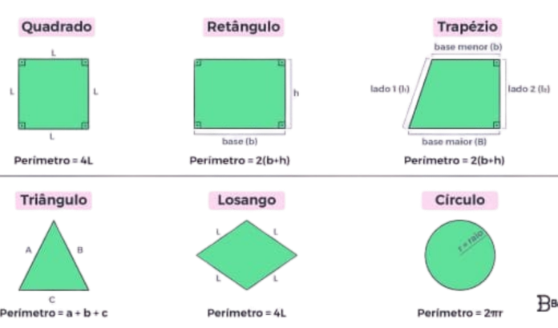

Sobre a matemática
A matemática estuda padrões, números, formas e relações, sendo essencial para compreender o mundo.
Presente em áreas como tecnologia, engenharia e arte, ela resolve problemas,
faz previsões e estrutura o pensamento lógico.
Como linguagem universal, conecta o cotidiano à exploração do universo.
Álgebra
A álgebra é um ramo da matemática que utiliza letras e símbolos para representar números e expressar relações entre eles.
Ela é essencial para resolver problemas de maneira geral, já que permite criar equações e fórmulas que descrevem situações do mundo real.
Na álgebra, trabalhamos com variáveis, expressões algébricas e equações, sendo possível generalizar soluções e estudar padrões.
Este campo é a base para áreas mais avançadas da matemática, como cálculo e estatística, além de ser amplamente utilizado em ciência,
engenharia e tecnologia, tornando-se uma ferramenta indispensável para o desenvolvimento do pensamento lógico e abstrato.
Exemplo

Geometria
A geometria é o ramo da matemática dedicado ao estudo de formas, tamanhos, posições e propriedades dos objetos no espaço.
Ela está presente em diversas áreas do cotidiano, como arquitetura, engenharia e design,
ajudando a resolver problemas práticos, como medir terrenos ou projetar construções.
Com o uso de fórmulas e teoremas, a geometria permite calcular áreas, perímetros, volumes e distâncias, além de desenvolver o raciocínio lógico e espacial.
É uma ciência que conecta matemática, arte e natureza, sendo fundamental tanto para aplicações práticas quanto para
compreender a beleza das formas ao nosso redor.
Exemplo

Estatística e probabiliade
Análise de dados e estatística são áreas essenciais para interpretar informações e tomar decisões informadas.
A estatística é a ciência que coleta, organiza, analisa e interpreta dados, transformando números em insights úteis.
Por meio de técnicas como médias, mediana, gráficos e probabilidade, é possível identificar padrões,
prever tendências e resolver problemas em diversas áreas, como economia, saúde, tecnologia e negócios.
A análise de dados vai além, utilizando ferramentas tecnológicas e métodos avançados para extrair significado de grandes volumes de informações.
Juntas, essas áreas são fundamentais no mundo atual, onde os dados são uma fonte valiosa de conhecimento e estratégia.
Exemplo
1. Média:
Uma empresa avalia os salários de 5 funcionários: R$2.000, R$2.500, R$3.000, R$3.500 e R$4.000.
A média é calculada somando os valores e dividindo pelo número de funcionários:
(2.000+2.500+3.000+3.500+4.000)/5=15.000/5=3.000.(2.000 + 2.500 + 3.000 + 3.500 + 4.000) / 5 = 15.000 / 5 = 3.000.(2.000+2.500+3.000+3.500+4.000)/5=15.000/5=3.000.
Média: R$3.000.
2. Mediana:
Os números 12, 15, 18, 20 e 22 estão em ordem crescente. O número do meio (18) é a mediana.
Mediana: 18.
3. Moda:
Em uma pesquisa, as notas dadas a um filme foram: 5, 7, 8, 7 e 9.
O número mais frequente é 7.Moda: 7.